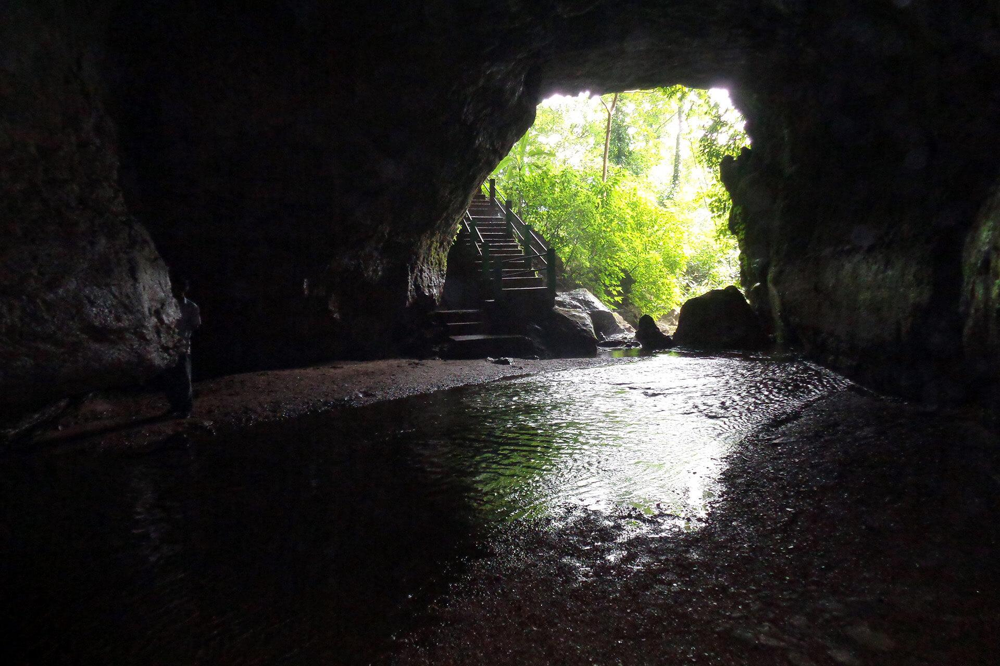
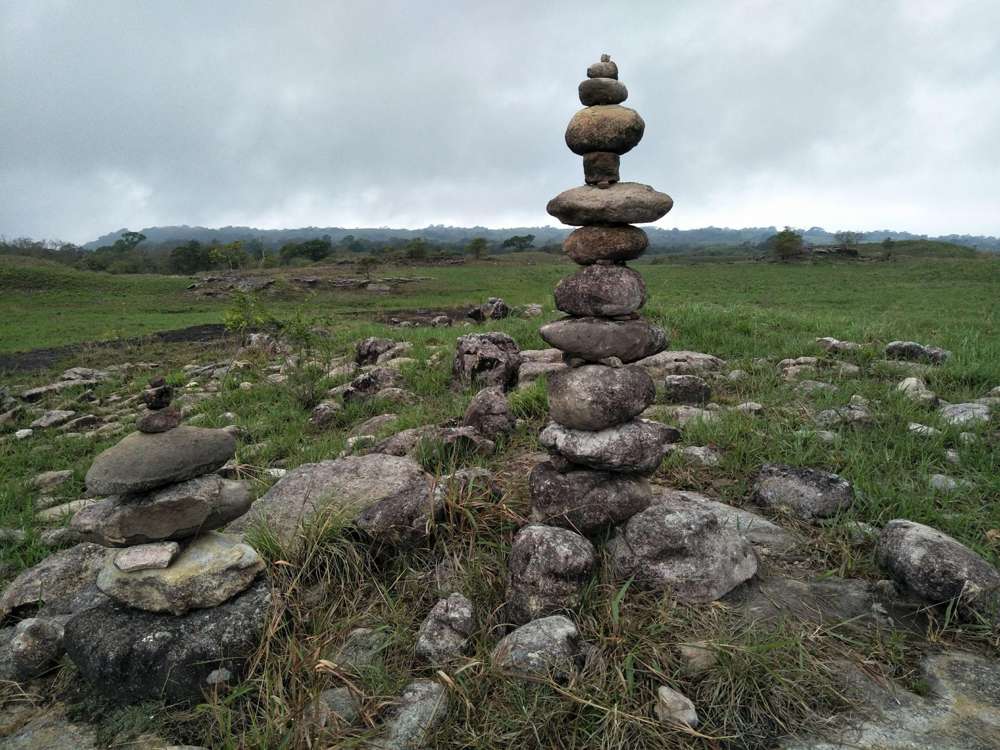
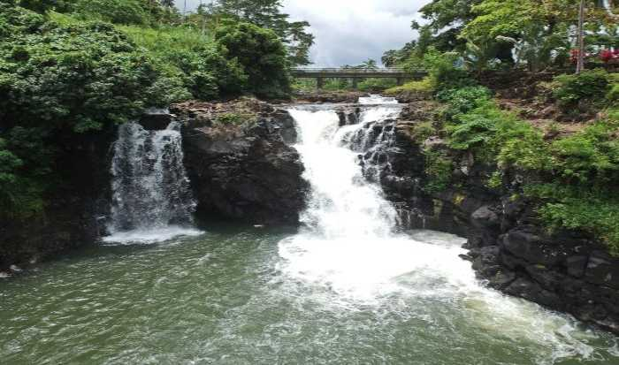

Tura
Tura is the largest town in the Garo Hills and is surrounded by hills and forests. It is famous for Tura Peak, waterfalls, and scenic landscapes. The cool climate and greenery attract many tourists throughout the year. The town is rich in Garo culture and traditions. It is a perfect destination for nature and adventure lovers.

Nokrek National Park
Nokrek National Park is a UNESCO Biosphere Reserve located in the Garo Hills. The park is home to rare wildlife, elephants, and exotic birds. Dense forests and beautiful landscapes make it ideal for trekking and wildlife exploration. Nature lovers visit the park to enjoy Meghalaya’s biodiversity. It is one of the best eco-tourism destinations in the state.

Siju Cave
Siju Cave is one of the longest limestone caves in India and is known for impressive rock formations. The cave is also called the “Bat Cave” because many bats live inside it. Underground rivers and natural chambers make the cave adventurous and unique. Visitors enjoy exploring its mysterious interiors and geological beauty. It is a must-visit destination for adventure travelers.

Balpakram National Park
Balpakram National Park is famous for deep gorges, waterfalls, cliffs, and wildlife. The park is often called the “Land of Spirits” because of local legends. It is home to elephants, deer, rare birds, and medicinal plants. Visitors enjoy trekking, photography, and nature exploration. The dramatic landscapes make it one of Meghalaya’s most unique destinations.

Pelga Falls
Pelga Falls is a beautiful waterfall located near Tura in the Garo Hills. The waterfall is surrounded by forests, rocks, and peaceful natural scenery. Visitors enjoy relaxing, photography, and spending time near the cool flowing water. The area becomes especially beautiful during the monsoon season. It is a hidden gem for nature lovers visiting Meghalaya.